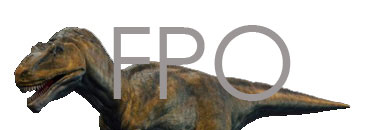
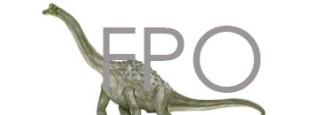
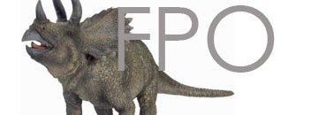

Carnivore
Meat-eaters (carnivores or theropods) need to have some way to get meat. Carnivorous dinosaurs usually had long, strong legs so thay they could run quickly in order to catch their prey. They also needed large, strong jaws, sharp teeth, and deadly claws so they could kill and then tear apart the prey. Good eyesight, a keen sense of smell, and a large brain to plan hunting strategies are also very important for successful hunting. Many of the carnivores (like Deinonychus, Coelophysis and Velociraptor) may have hunted in packs, so social cooperation was necessary for a good hunt for some species.
Herbivore
Plant-eaters (herbivores) usually have blunt teeth that are good for stripping vegetation (leaves, twigs, etc.). Some also have flat teeth for grinding tough plant fibers. Many herbivores have cheek pouches in which they can store food for a while. Plant-eaters usually have to eat a much larger volume of material than meat-eaters (carnivores) do in order to get the same amount of calories (this is because leaves, twigs, and roots are low in calories). Plant-eaters usually have larger digestive systems (than meat-eaters) that are needed to digest large amounts of tough plant fibers.
Omnivore
Only a few of the known dinosaurs were omnivores (eating both plants and animals). Some examples of omnivores are Ornithomimus and Oviraptor, which ate plants, eggs, insects, etc. Also, most herbivores are "accidental omnivores" because when they eat plants, they accidentally ingest many insects and other small animals.
Winged
The Pterodactyls (or Pterodactyloids) were a group of flying reptiles that ranged in size from having a wingspan of a few inches to over 40 feet. They were lightly built with hollow bones, long, curved necks, long skulls, and small bodies. They had large brains and good eyesight. Some had short tails, some had no tails. Some had light-weight, bony head-crests, some did not. .